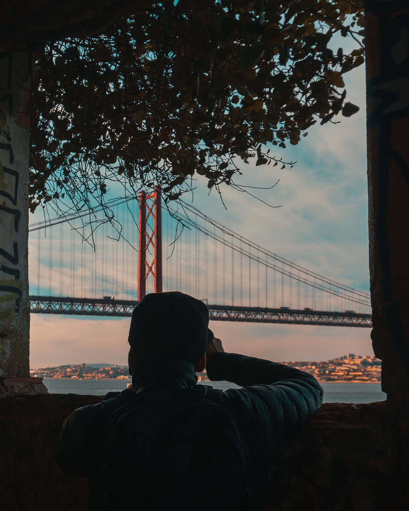

<div class="about-content">
	<div class="container">
		<div class="row">
			
		<div class="col-lg pr-4">
			
		</div>
		<div class="col-lg">
			<p>
				Hi there, 
			</p>
			<p>
				I’m Aymeric Bourguilleau, a freelance digital content creator, photo shooter & video maker. I am originally from France and now based in Phnom Penh, Cambodia. I fell in love with this country and its people in 2014, while I was working for a local video production agency.
			</p>
			<p>		
				I’ve spent the last 5 years building social media strategies and viral contents for TV and lifestyle companies. As a main takeaway, having a consistent and engaging digital communication can be one of the most powerful tool to share ideas and promote brands within a community.
			</p>
			<p>
				That's why I chose to dig further into that way and add up my passion for photography and videomaking :
				<ul>
					<li>to highlight amazing stories about people, skills, products, places and all sort of projects</li>
					<li>to transmit their vision, commitment and accomplishment in an immersive way</li>
					<li>to boost their visibility through an effective social media plan, content and interaction</li>
				</ul>	
			</p>
			<p>
				From instant shots with an iPhone, to more complex ones with a professional camera and a gimbal, to even aerial ones with a drone... You can count on my gears and skills to produce and manage high-quality content :)
			</p>
			
		</div>
		</div>

	</div>
</div>